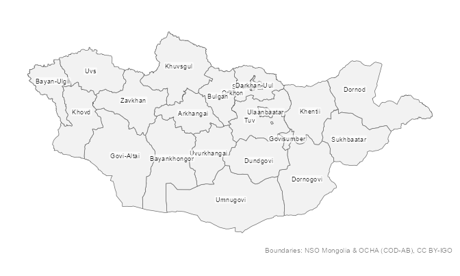
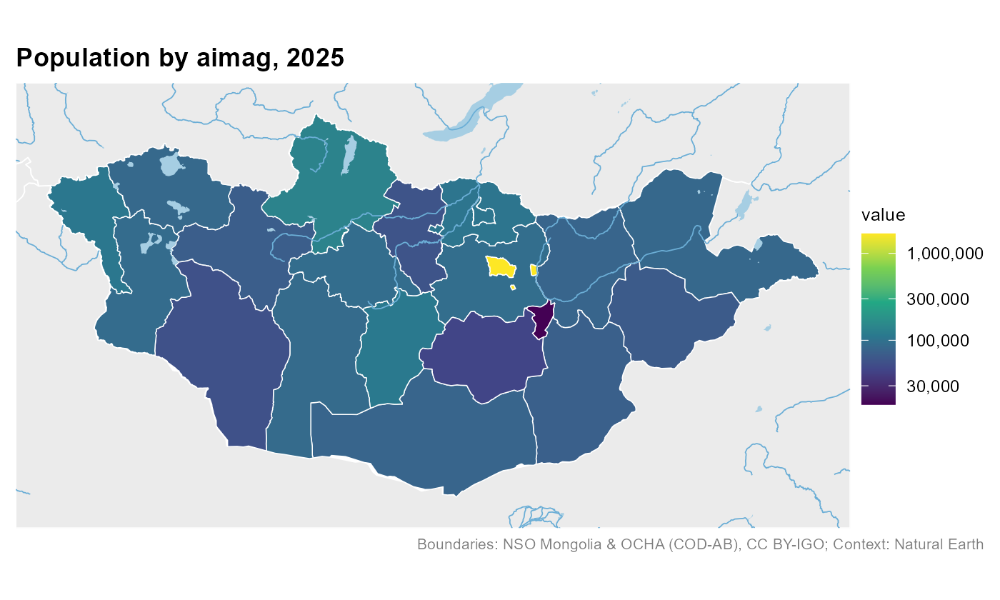
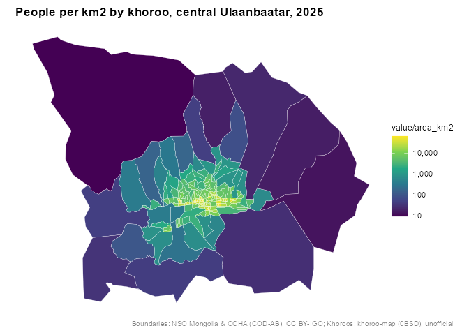
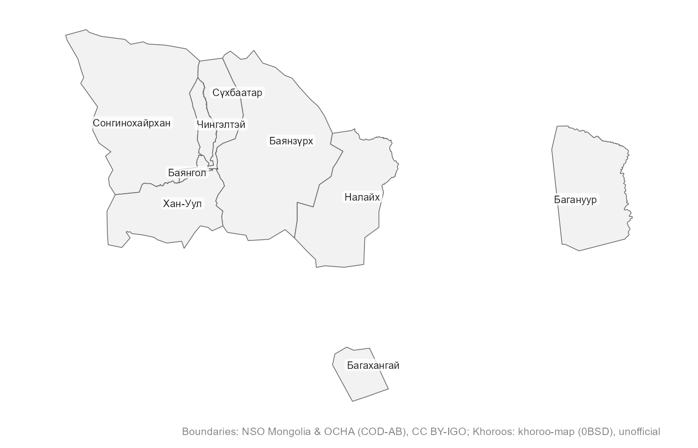

Maps of Mongolia and Ulaanbaatar for R, at every openly available administrative level. One package, no downloads to start, and names that match however you spell them.
Монгол хэлээр: https://temuulene.github.io/mongolmaps/mn/
| Level | Function | Units |
|---|---|---|
| Country | mn_country() |
1 |
| Economic regions | mn_regions() |
5 |
| Aimags (provinces) and the capital | mn_aimags() |
22 |
| Soums and Ulaanbaatar districts |
mn_soums(), mn_ub_districts()
|
330 + 9 |
| Ulaanbaatar khoroos | mn_khoroos() |
204 |
| Bags | mn_bags() |
codes and names of all ~1,650; boundaries from NSO on request |
Every function returns an sf table with the same columns (codes, English and Mongolian names, parent units, area), so maps at different levels work the same way.
Installation
# install.packages("pak")
pak::pak("temuulene/mongolmaps")Your first map
library(mongolmaps)
mn_map(label = TRUE)
mn_map() picks a projection suited to Mongolia, labels places inside their borders and credits the data source.
Your data on a map
mn_join() attaches a data frame to the boundaries. The place column can use any spelling, Cyrillic, or the codes used in National Statistics Office (NSO) tables. Totals and other levels in NSO tables are dropped for you.
pop <- mn_example_population[mn_example_population$Year == 2025, ]
pop_map <- mn_join(pop, by = "Region", level = "aimag")
#> ℹ Joining at the aimag level; dropped 6 rows for larger units ("country" and
#> "region") and 2196 rows for smaller units ("soum" and "bag").
mn_map(pop_map, fill = value, trans = "log10", context = TRUE,
title = "Population by aimag, 2025")
Ulaanbaatar down to khoroos
# The six central districts, by their usual abbreviations
central <- c("BGD", "BZD", "ChD", "KhUD", "SKhD", "SBD")
khoroo_pop <- mn_join(pop, by = "Region", level = "bag", within = central)
#> ℹ Joining at the bag level; dropped 371 rows for larger units ("country",
#> "region", "aimag", and "soum").
mn_map(khoroo_pop, fill = value / area_km2, trans = "log10",
title = "People per km2 by khoroo, central Ulaanbaatar, 2025")
Khoroos are labelled with their number; districts and other units with their name, in English or Mongolian:
mn_map(mn_ub_districts(), label = TRUE, lang = "mn")
Names in any spelling
mn_match(c("Khuvsgul", "Hovsgol", "Khövsgöl", "Хөвсгөл", "MN-041", "267"))
#> [1] "MN67" "MN67" "MN67" "MN67" "MN67" "MN67"
mn_match("Sukhbaatar district")
#> [1] "MN1119"
mn_match("Bayan-Uul", level = "soum", within = "Dornod")
#> [1] "MN2110"
mn_codes("soum", within = "Khovd")
#> # A tibble: 17 × 16
#> pcode name name_en name_mn name_mns level type number iso_code nso_code
#> <chr> <chr> <chr> <chr> <chr> <chr> <chr> <int> <chr> <chr>
#> 1 MN8401 Jargala… Jargal… Жаргал… Jargala… soum soum NA <NA> 18401
#> 2 MN8404 Altai Altai Алтай Altai soum soum NA <NA> 18404
#> 3 MN8407 Bulgan Bulgan Булган Bulgan soum soum NA <NA> 18407
#> 4 MN8410 Buyant Buyant Буянт Buyant soum soum NA <NA> 18410
#> 5 MN8413 Darvi Darvi Дарви Darvi soum soum NA <NA> 18413
#> 6 MN8416 Durgun Durgun Дөргөн Dörgön soum soum NA <NA> 18416
#> 7 MN8419 Duut Duut Дуут Duut soum soum NA <NA> 18419
#> 8 MN8422 Zereg Zereg Зэрэг Zereg soum soum NA <NA> 18422
#> 9 MN8425 Mankhan Mankhan Манхан Mankhan soum soum NA <NA> 18425
#> 10 MN8428 Munkhkh… Munkhk… Мөнхха… Mönkhkh… soum soum NA <NA> 18428
#> 11 MN8431 Must Must Мөст Möst soum soum NA <NA> 18431
#> 12 MN8434 Myangad Myangad Мянгад Myangad soum soum NA <NA> 18434
#> 13 MN8437 Uyench Uyench Үенч Üyench soum soum NA <NA> 18437
#> 14 MN8440 Khovd Khovd Ховд Khovd soum soum NA <NA> 18440
#> 15 MN8443 Tsetseg Tsetseg Цэцэг Tsetseg soum soum NA <NA> 18443
#> 16 MN8446 Chandma… Chandm… Чандма… Chandma… soum soum NA <NA> 18446
#> 17 MN8449 Erdeneb… Erdene… Эрдэнэ… Erdeneb… soum soum NA <NA> 18449
#> # ℹ 6 more variables: parent_pcode <chr>, region_pcode <chr>,
#> # aimag_pcode <chr>, soum_pcode <chr>, area_km2 <dbl>, has_geometry <lgl>More
- Interactive maps:
mn_leaflet(mn_khoroos(), fill = area_km2). - Labels in Mongolian:
lang = "mn"in any function, oroptions(mongolmaps.lang = "mn"). - Full-resolution boundaries:
resolution = "high"(downloaded once and cached). - Settlements, rivers, lakes and neighbouring countries:
mn_settlements(),mn_rivers(),mn_lakes(),mn_neighbours(). - Roads, railways, airports and places from OpenStreetMap:
mn_roads(within = "Ulaanbaatar"),mn_railways(),mn_airports(),mn_places()(downloaded once and cached). - Elevation, hillshade, land cover and population grids (with terra):
mn_map(mn_elevation()),mn_landcover(),mn_population(2025), andmn_zonal()to sum them by aimag, soum or khoroo. - Protected areas:
mn_protected_areas(). - Small multiples:
mn_aimag_gridforgeofacet::facet_geo().
Data sources
| title | provider | license |
|---|---|---|
| Administrative boundaries (country to soum) | National Statistics Office of Mongolia; OCHA | CC BY-IGO 3.0 |
| Ulaanbaatar khoroo boundaries | khoroo-map (GitHub Tuvshin-Level/khoroo-map) | 0BSD |
| Unit codes and names down to bag level | National Statistics Office of Mongolia | Open data (NSO) |
| Capital, aimag and soum centres | Wikidata | CC0 1.0 |
| Neighbouring countries, major rivers and lakes | Natural Earth | Public domain |
| Full-resolution administrative boundaries | National Statistics Office of Mongolia; OCHA; khoroo-map | CC BY-IGO 3.0; 0BSD (khoroos) |
| Roads and streets (OpenStreetMap) | OpenStreetMap contributors (via HOT export) | ODbL 1.0 |
| Railways, stations and airports (OpenStreetMap) | OpenStreetMap contributors (via HOT export) | ODbL 1.0 |
| Rivers, streams and water bodies (OpenStreetMap) | OpenStreetMap contributors (via HOT export) | ODbL 1.0 |
| Populated places (OpenStreetMap) | OpenStreetMap contributors (via HOT export) | ODbL 1.0 |
| Elevation, 1 km (Copernicus DEM) | Copernicus DEM GLO-90 (DLR; Airbus; ESA; European Union) | Copernicus DEM licence (free use with attribution) |
| Land cover, 1 km (ESA WorldCover 2021) | ESA WorldCover project | CC BY 4.0 |
| Elevation, 90 m (Copernicus DEM, read online) | Copernicus DEM GLO-90 (DLR; Airbus; ESA; European Union) | Copernicus DEM licence (free use with attribution) |
| Land cover, 10 m (ESA WorldCover 2021, read online) | ESA WorldCover project | CC BY 4.0 |
| Population grids 2015-2030 (WorldPop) | WorldPop (University of Southampton) | CC BY 4.0 |
| Protected areas (WDPA) | UNEP-WCMC and IUCN (Protected Planet) | WDPA terms (non-commercial; no redistribution) |
Khoroo boundaries come from an open project that does not state their origin, so treat them as unofficial. Bag boundaries are not openly published; see ?mn_bags for how to use them once you get them from NSO. Please credit the providers when you publish maps: mn_citation() returns the text, and mn_map() adds it as a caption.